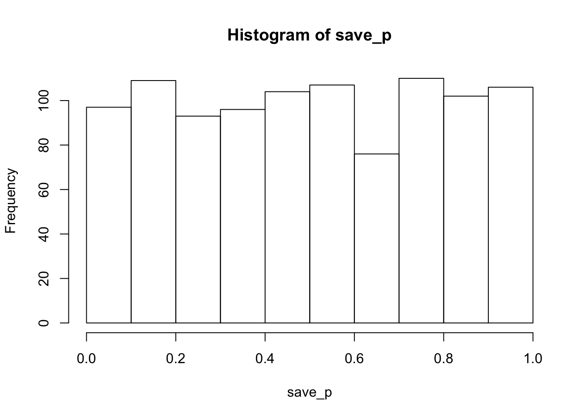
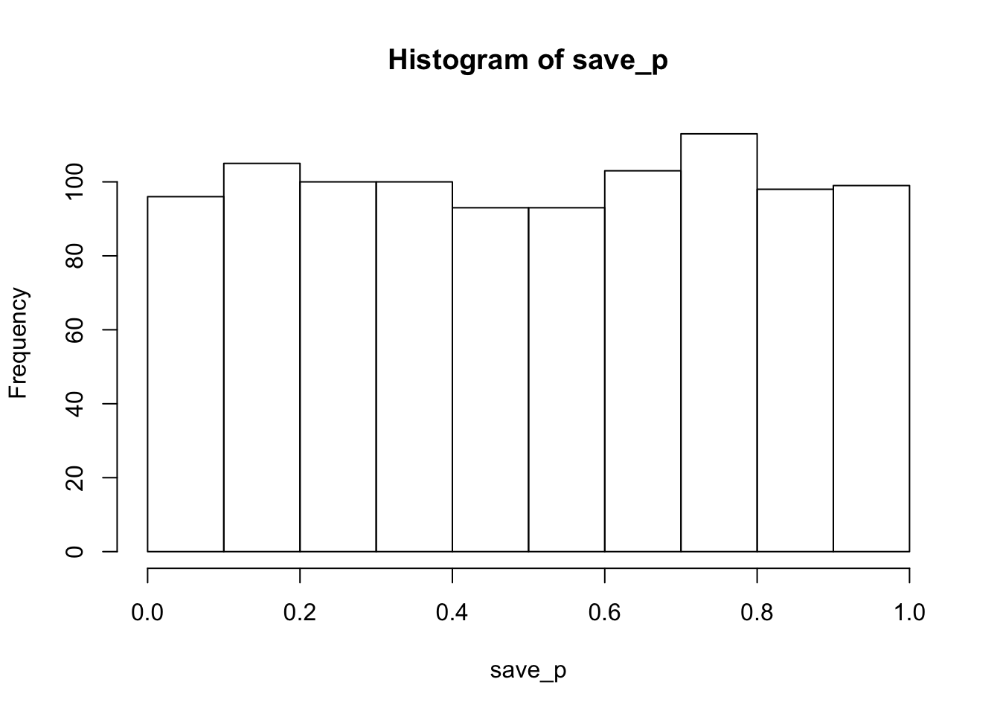

Various musings
Using this mainly as a place to make notes for myself so I don’t forget what I’m doing. I own my spelling mistakes and sell them on e-bay.
What does typing research say about improving your typing speed? The difficulty of applying basic science
As far as I can tell not much. At least not much besides practice alot. Gee thanks science. I’m writing about this topic because a colleague of mine emailed me this morning and asked what, “I want to improve my typing speed, what should I do, what’s the best resource you’ve come across?”. I thought it would be interesting to give my advice, and think out loud about the topic.
Why ask me? One of my science hobbies is to use the task of typing in the laboratory (or online using Amazon’s Mechanical Turk) to study how basic cognitive processes shape skilled performance. Over the years I’ve published a few papers on typing (Behmer and Crump 2017a; Behmer and Crump 2017b; Crump and Logan 2010a; Crump and Logan 2010b; Crump and Logan 2013; Crump and Logan 2010c; Liu, Crump, and Logan 2010; Logan and Crump 2010; Logan and Crump 2011; Logan and Crump 2009; Yamaguchi, Crump, and Logan 2013). And, I’ve read way too many papers on typing.
I got into this research for lots of reason, I like skill learning, I like playing musical instruments, I like patterns, typing was easy to measure, it has alot of interesting properties, it was kind of neglected as a research area since the 80s, and when I was a postdoc with Gordon Logan, he said I needed to make him famous, so I read all of Gordon’s papers, found that he had done some typing research, then started talking about how instance based memory might shape typing, and the rest was several more years to the present moment where I am using typing as a tool to ask and answer lots of different questions…But, I still can’t point to a paper, or to a typing training website, or program, and say, “this will be the the most optimal way to get your typing up to speed the fastest”. Ugh, what is basic science in typing of all things good for, if it can’t make recommendations about learning the task!
Papers on optimizing learning for typing to get to maximum speed the fastest
As far as I know, there aren’t any good papers on this topic to form a recommendation. At least not in my fuzzy memory (which could be to blame). If you know of a paper on this topic, please let me know @MattCrump_, or email me, and I’ll add it here, and let my colleague know. Particularly, there isn’t much about what someone who has already learned to type, and has typed for a very long time, should do to become faster (most of us).
There is some research on learning rates associated with learning to type on different keyboard layouts (Buzing 2003). The take home is that it takes a huge time investment to relearn to type on a different layout, and you don’t get much faster at the end of it (I can confirm, I tried to learn the DVORAK layout in the Spring by typing the book Alice and Wonderland, I typed around 100,000 words, got faster, but never got to the point of reaching my QWERTY speed. Plan is to analyze this data to ask questions about what is learned during learning, didn’t manipulate how to learn faster).
There’s an older paper suggesting that spacing is important during learning (Baddeley and Longman 1978). Typists who practiced for one hour per day, rather than two, showed better retention. But, while they were practicing, mostly everyone improved at near the same rate.
There’s a more recent paper looking at differences between “standard” and “non-standard” typists (Logan, Ulrich, and Lindsey 2016). “Standard typists” claimed to have learned standard home-row touch-typing, and consistently use particular fingers for particular keys. Non standard typists just do whatever they want, perhaps inconsistently pairing fingers with keys, or using fewer fingers. There were some differences, but not so much in terms of average typing speeds. Still, standard typists were faster, perhaps learning to map fingers consistently to keys and using more fingers is a helpful thing to learn.
Learning studies are long
It would be pretty straightforward to get data on how to optimize learning and retention of typing skill, say for the QWERTY keyboard, or any other keyboard. All, you need is lots of people to commit to a typing training program, and then assign them into lots of different groups testing different manipulations and their interactions. In general, this hasn’t been done (open issue, see post about github for science below). Here are some manipulations:
- Practice schedule, (30 minutes per day, 1 hour per day, 2 hours, per day etc.)
- Material
- natural text
- random letter strings
- text that approximates the statistical structure of the natural language (letter, bigram, trigram, etc. frequency)
- high frequency vs. medium frequency vs. low frequency words
- Material optimization (# 2 might identify what kinds of material needs to be practiced, this information could be used to tailor the material to an individual, to present them with the material they need to learn now to get better fastest)
- Touch-typing vs. hunt-and-peck vs. nonstandard
- Being able to see the keyboard or not see the keyboard
- Tactile properties of the keyboard (buttons, flat screens, split keyboard)
- Amount of practice.
- Error feedback vs. no error feedback
- Learning feedback in general about progress vs. no feedback
- gamifying typing with rewards vs. not (motivation)
This list could go on, but that’s already lots of IVS, and tonnes of interactions to look at. We haven’t even discussed why any of these manipulations would work or not based on theories of typing (of which there are quite a few, including computational models.). Learning studies are long and hard to do. One solution would be to set up an online typing platform where anyone could log in, keep their typing data stored in their own databases, type things according to various conditions, and say get feedback from an Rshiny app that automatically pulls their data from a db, and shows it to people. On the back end, we could collect loads of typing data over a few years, and then report back. It’s an applied thing to do. I haven’t done it, have thought about doing it. Not sure if I will do it. Someone could do it.
Model based insights: norms and instances
Norms: Type higher frequency things faster than lower frequency things
Here’s one fact from a normative model of typing speed, from Behmer and Crump (2017a). We asked the question, would typists benefit overall from typing higher frequency letters faster than lower frequency letters? It turns out that this is what typists do: they become sensitive to the frequency structure of the the things they type, and type higher frequency things faster than lower frequency (makes sense in terms of learning, you are faster for the things you did more). But, is this a good thing? Our modelling says, YES, it’s a good thing. Here’s a figure from the model:
knitr::include_graphics("blogFigures/NormativeTyping.png")
You can read the paper for more details on the simulation, but what you are looking at is are dots for different simulated typists. The y-axis shows simulated mean typing speed, and the x-axis shows how well correlated the typing speeds for each letter are with letter frequency. When there is no correlation, typing speed is in the middle. When there is a positive correlation (bad for typing), typing is much slower. This occurs when typists type low frequency letters faster than high frequency letters (don’t do that, it will slow you down). Notably, tuning your typing speed for individual letters so that you type the high frequency letters faster than low frequency letters produces the fastest overall typing speeds (the negative correlations going to the left).
So, if there is one thing you should do to type faster, it’s to learn to type higher frequency things faster than lower frequency things. What can you do with this information? Who knows. Fortunately for you, your learning and memory processes already automatically do this for you, as most typists are negatively correlated (as they should be). Perhaps trying to become more negatively correlated with further improve your typing.
Instance: typing is highly context-specific
There is increasingly loads of evidence to support an instance-based view of typing (at least IMO, I’m totally biased about this because I’m often the one producing the evidence :) ). What does this even mean?
Here are some theoretical implications:
- You do not learn things in general, you learn things in specific.
- Transfer of training is limited, you mostly get better at the strings you type, small generalization window to other strings.
- You need lots of experience with all of the contexts in which particular letters appear in particular strings to get better at typing those letters in those contexts
- In typing, there will be no substitute for lots of practice to get experience with all of the contexts
- Typing strings is cue driven. The strings act as the cue for how you typed them last time. Recency matters even for experts, and the recent strings that you typed can modify how you type them and similar strings in the present (Crump and Logan 2010a)
- The way you typed before will shape how you do it again. If you have bad habits, they will be a force to be reckoned with. If you have to compute the solution to where to put your fingers by looking, then you should learn to automatize that solution so you don’t have to look.
The most clear prescription from the instance theory of automatization (Logan 1988), is that lots of practice will eventually populate your memory with “fast retrieval times” for every kind of keystroke that you experience in normal typing. This will take a long time because keystroke times are influences by context (surrounding letters etc.), and there are lots of contexts.
So, JASON, if you are reading this. You need to sit down and copy-type the crap out of everything, over and over, and you will get faster.
Some armchair recommendations for improving typing speed
So, we have alot of basic science using typing to understand cognitive processes, not to understand typing in specific. This is one reason we can’t say much about how to push your typing skills, beyond practice, practice, practice, which we already knew without the research (doesn’t invalidate the role of practice, so practice, practice, practice).
I’ll make some armchair recommendations about how to practice, and what to practice…
Practice not having to look at the keyboard. This is most important if you can’t already type with your eyes closed. It’s pretty easy to get a good sense of how well you can type with your eyes closed (by closing your eyes and typing, and then seeing what happens). Even touch-typists slow down when the keyboard is hidden from view. So the keyboard is an important visual cue. However, looking to find the keys (hunt-and-peck) is very slow. The goal isn’t to learn to ignore the keyboard entirely, it’s to not use it as a crutch.
Think words, not letters. If you are thinking letters in your head, rather than words in your head, while you type, you need to learn to use your inner voice for words, and not for letters. We have some work in the pipeline showing this is very important. Most typists report saying words in their head, so this might not be an issue. Learn how to say and type words. Letter level typing is slow.
Copy-type a book. I’ve tried this before and seemed to help. Get a book, or something else with natural text to type. Put it on screen. Open a blank text editor. Then copy-type, copy-type, copy-type. When I did this, I wrote a little program in LIVECODE to keep track of my keystrokes, so I could plot my progress in terms of WPM over practice. This is just mainly a way to force yourself to be doing the practice of typing. It’s not as clear to me how to choose the book.
Get the feeling of automaticity. It’s actually pretty easy to get super fast at typing specific sequences. For example, if you type “Browsy night frumps vexd jack q” over and over. You will be typing all the letters of the alphabet, and you will rapidly be able to learn how to type this sequence really fast. We have another paper (rejected, sitting in file drawer), where we had people learn to type 26 letter sequences on a novel keyboard. All they did was practice the sequence 20 times (e..g, a couple minutes of practice). Many subjects were able to go from really slow on a completely unfamiliar keyboard, to almost QWERTY speeds in 5 minutes. What did this achieve? Nothing much beyond the feeling of automaticity. None of this practice transferred very much to other sequences (instances remember). Nevertheless, could be helpful to feel how fast you could go.
These are the more geeky suggestions that require a bit of technical skills for analyzing yourself.
Practice the top 100 or 1000? high frequency words that you type. We already know that typing the high frequency things faster than the low frequency things will speed up your overall typing speed. You probably already do this to some extent, because that’s how learning works. So, if you were to make some choices on which specific words to type, it could make sense to practice the highest frequency words. These will already be nearest the floor (in terms of learning curve), but I’m sure you will find that by isolating words, say (psychology), that you can learn to type it faster. To customize this for yourself, do the following:
- Create a large corpus of text from your own writing. E.g., take all the papers you have written, turn them into plain text, and load them into R (tm package is good tor this)
- Get frequency counts for all the words
- Choose say, the top 1000, or top 100? most frequent words
- Create fake paragraphs of words sampled from these high frequency words (words don’t need to be in meaningful sentences)
- Type those paragraphs over and over
Practice random letter strings?. It’s not clear how helpful this would be. It’s really frustrating to do. Everyone slows down a tonne when forced to type random letters strings. This goes to show both the importance of letter context, and words in typing. It really forces you to know where the letters are though.
Measure your typing, then practice what you’re slow at. I would guess if you wrote some code to measure the keystroke times for everything you type, you could then analyze what you are slow at typing. Then you could practice the slow things to bring them up to speed. Especially, practice the high frequency slow things that should be fast.
Phew. I think I’m done here. Happy typing.
References
It seems the auto-referencer deletes deletes author names when they are the same as the previous set of author names. (probably won’t fix this here.) Also .pdf links to my article won’t work (will try to fix this later, all of the .pdfs are available in my publications page)
Baddeley, AD, and DJA Longman. 1978. “The Influence of Length and Frequency of Training Session on the Rate of Learning to Type.” Ergonomics 21 (8). Taylor & Francis: 627–35.
Behmer, Lawrence P., and M. J. C. Crump. 2017a. “Crunching Big Data with Finger Tips: How Typists Tune Their Performance Towards the Statistics of Natural Language.” In Big Data in Cognitive Science, edited by Michael N. Jones, 319–41.
———. 2017b. “Spatial Knowledge During Skilled Action Sequencing: Hierarchical Versus Non-Hierarchical Representations.” Attention, Perception & Psychophysics 79: 2435–48.
Buzing, Pieter. 2003. “Comparing Different Keyboard Layouts: Aspects of Qwerty, Dvorak and Alphabetical Keyboards.” Delft University of Technology Articles.
Crump, M. J. C., and Gordon D. Logan. 2010a. “Episodic Contributions to Sequential Control: Learning from a Typist’s Touch.” Journal of Experimental Psychology: Human Perception and Performance 36 (3): 662–72. doi:10.1037/a0018390.
———. 2010b. “Hierarchical Control and Skilled Typing: Evidence for Word-Level Control over the Execution of Individual Keystrokes.” Journal of Experimental Psychology: Learning, Memory, and Cognition 36 (6): 1369–80. doi:10.1037/a0020696.
———. 2010c. “Warning: This Keyboard Will Deconstruct— The Role of the Keyboard in Skilled Typewriting.” Psychonomic Bulletin & Review 17 (3): 394–99. doi:10.3758/PBR.17.3.394.
———. 2013. “Prevention and Correction in Post-Error Performance: An Ounce of Prevention, a Pound of Cure.” Journal of Experimental Psychology: General 142: 692–709. doi:10.1037/a0030014.
Liu, Xianyun, M. J. C. Crump, and Gordon D. Logan. 2010. “Do You Know Where Your Fingers Have Been? Explicit Knowledge of the Spatial Layout of the Keyboard in Skilled Typists.” Memory & Cognition 38 (4): 474–84. doi:10.3758/MC.38.4.474.
Logan, Gordon D. 1988. “Toward an Instance Theory of Automatization.” Psychological Review 95 (4). American Psychological Association: 492.
Logan, Gordon D, Jana E Ulrich, and Dakota RB Lindsey. 2016. “Different (Key) Strokes for Different Folks: How Standard and Nonstandard Typists Balance Fitts’ Law and Hick’s Law.” Journal of Experimental Psychology: Human Perception and Performance 42 (12). American Psychological Association: 2084.
Logan, Gordon D., and M. J. C. Crump. 2009. “The Left Hand Doesn’t Know What the Right Hand Is Doing: The Disruptive Effects of Attention to the Hands in Skilled Typewriting.” Psychological Science 20 (10): 1296–1300. https://CrumpLab.github.io/CognitionPerformanceLab/CrumpPubs/Logan and Crump - 2009.pdf.
———. 2010. “Cognitive Illusions of Authorship Reveal Hierarchical Error Detection in Skilled Typists.” Science 330 (6004): 683–86. doi:10.1126/science.1190483.
———. 2011. “Hierarchical Control of Cognitive Processes: The Case for Skilled Typewriting.” In Psychology of Learning and Motivation, edited by B. H. Ross, 54:1–27. Elsevier. https://CrumpLab.github.io/CognitionPerformanceLab/CrumpPubs/Logan and Crump - 2011.pdf.
Yamaguchi, Motonori, M. J. C. Crump, and Gordon D. Logan. 2013. “Speed–accuracy Trade-Off in Skilled Typewriting: Decomposing the Contributions of Hierarchical Control Loops.” Journal of Experimental Psychology: Human Perception and Performance 39 (3): 678–99. doi:10.1037/a0030512.
Writing a paper in public on github
One of the lab’s summer projects was to write a paper in public on github. It’s still happening right now. This is an interim update.
https://github.com/CrumpLab/EntropyTyping
I’d always wanted to use the issues tab in github for academic purposes. It’s such a great tool for software development, people can post bugs and feature request, and developers can respond in threads, and when problems get solved, the issues get closed. And, the closed issued threads are still searchable.
What’s the application to science? Science is collaborative, like software development, and it has alot of open and closed issues. Ideally people are working to close open issues, or they are discovering new issues to open, or realizing that closed issues are more open than they thought they were.
The status of open and closed issues, say in Cognitive Psychology (my field), or other fields, is wildly untracked. It’s mainly in the heads of people. That is sad for science. I’m sorry for the science that gets fuzzed out in my head.
This is a huge problem for researchers entering the field. There is no location where they can go to read the threads of open and closed issues. Sure, they can read journal articles, and talk to people. In any case, I’m getting off target, I’m not trying to solve science here.
What I was thinking was that it would be fun for the people in my lab to start a project from beginning to end on github, and use the issues thread to open and close conceptual and technical issues. It’s the conceptual issues I was most interested in.
I had a project that would be perfect. It involved a new analysis of a large dataset we had previously collected from typists on the internet (they typed paragraphs in English, and we recorded their keystroke times). The data was already on github from our previous work. We were interested in whether letter uncertainty, as measured by information theory, would explain variance in how fast people typed specific letters in every letter position (1-9), of words from length 1-9. This required another large dataset, Google n-grams, which we used to calculate Shannon’s H for sets of letters occurring in all positions by word length. We had all the data, so all we had to do next was the analysis and write the paper, all of which could be done in R-studio and saved to github.
We did all of the analysis in R, and published R Markdown documents as we went along. One strategy was to have each of us (Myself, Nick Brosowsky- doctoral student, and Walter Lai-undergraduate) complete the analysis somewhat independently, as a double-check.
As we wrote code for the analysis, we talked about what we were doing by opening new threads in the issues tab. I found this very useful for both thinking about what I was doing, as well as giving instruction about things my team might not be aware of.
More important, we started using the issues threads to talk about what the point was. How we would write the paper, what we wanted to say, what we needed to know, what kinds of models could predict our results by deduction, etc.
The identification of conceptual issues led to a breakthrough. We found out that Gordon Logan’s (1988) Instance Theory of Automatization is a process model of how automatized performance is determined by entropy. In other words, it models the Hick-Hyman law. That was a cool outcome. Randy Jamieson had told me that another instance model, Hintzman’s MINERVA II, behaved similarly, so the relationship was not a complete surprise. And, if you know Gordon’s instance theory and information theory, and you think about how they are same, it won’t take long before it seems rather obvious. Gordon is probably kicking himself that he didn’t point this out in his paper.
At the same time, I began writing the paper in R-studio using the fantastic papaja package, by Frederick Aust. It’s an R package that converts an Markdown document into an APA style manuscript. Because we had fleshed out all of the issues in the issues tab, I felt the writing process go fairly fluently. It was fun.
Where are we now that the summer is past the middle? Still working on it. The paper is mostly finished, just need to add some code and description for the instance model (that is already written in the analysis scripts). Not surprisingly, there hasn’t been much public feedback or participation in the issues threads. That’s OK, it’s kind of a narrow-band topic (information theory and instance theory applied to keystroke dynamics, where are all those people?). I expect if this github model became more widely adopted, it wouldn’t solve the problem of staying in your lane. But, it might broaden the highway. We did get to close a number of issues. More importantly, we opened some new issues for next time. I’m already excited to write our next paper in public.
Building websites with RMarkdown
2018-07-21, last compiled: 2018-07-22
I just built this website in R Markdown. I’m already familiar with R Markdown. How much time did it take? It took a couple minutes to download the reproducible example from the R-studio website. The tutorial and documentation is good. You can take a deep dive into all the possibilities and syntax by using the Definitive guide to RMarkdown by Yihui Xie.
Overall, it took a couple hours to get everything in order and make sure the page would load on github pages. It loaded fine, no real issues there. Then, another half-day tweaking and having fun with the possibilities.
The big benefit of this pipeline for me is for making copy-able websites that pair with free educational resources. I’ve written a few OER (open-educational resources) books previously, and this summer am working on a Statistics book for undergraduates in Psychology, along with a lab manual teaching R, Excel, SPSS, and JAMOVI. I’m planning to use these resources, but am making them freely available so other people can use them too.
All of the source code for editing the books, and for compiling them into a web-book using bookdown are in github repositories. The same github repos are used to host the web-books. So, anyone could copy the book and spin up a new instance on their won github repository.
I’m excited about making websites in R Markdown because I can provide a website wrapper for the course as well. This way, instructors have a whole set of tools to run the course. A website for students to go to a read the syllabus, see links to the textbook, etc, and the book and lab manual. Even better, is that it didn’t take me that long to make the website. And, it’s fast to edit. Seems like a win win.
Why is the p-distribution flat under the null?
2018-07-21, last compiled: 2018-07-22
The \(p\)-distribution is flat under the null, it is made to be this way. Let’s understand why. First, a simulation to show that the \(p\)-distribution is flat under the null. We start with the null distribution. Here, I sampled data from a normal (u=0, sd=1), ran a t-test, saved the \(p\)-value, repeated 1000 times, then put the \(p\)-values into a histogram. You can see it’s mostly flat across the range 0-1.
library(ggplot2)
save_p<-length(1000)
for(i in 1:1000){
save_p[i] <- t.test(rnorm(20,0,1))$p.value
}
hist(save_p)
Roughly, this means you are just as likely to get a \(p\)-value between 0 and 0.05, as you are to get one between .95 and 1. This is one reason why the size of the \(p\)-value does not allow you to have more or less evidence for the null, because under the null, you have the same chances of getting any \(p\)-value. A \(p\)-value of 0.9 does not give more evidence for the null than a \(p\)-value of .5.
Ok, so the simulation shows that the \(p\)-distribution is flat under the null, but why is it flat? The \(t\)-distribution isn’t flat. Aren’t \(t\)’s around 0 the most frequently occurring values? Aren’t those \(t\)’s associated with particular \(p\)-values, shouldn’t those particular \(p\)-values occur with the same frequency as their associated \(t\)s? This way of thinking is a bit of a trap, it might be one reason why people would expect the \(p\)-distribution to go up and down.
\(p\)’s are not the probability of specific \(t\)’s
Perhaps a common misinterpretation of \(p\)-values is that they represent the probability of getting a particular \(t\)-value. This is not what they represent. Instead, \(p\)’s represent ranges of t-values. Some examples:
When \(t\) = 0, \(p\) = 1. Obviously you do not have a 100% chance of getting a \(t\) of 0 every time under the null. Instead, you have a 100% chance of getting a \(t\) that is 0 or larger (in absolute value) than 0.
Under a two-tailed test, when \(p\) = .95, this does not mean you have a 95% chance of getting the specific \(t\) you observed. It means you have a 95% chance of getting the \(t\) you observed or greater (absolute value).
The percentage of \(t\)’s associated with the \(p\)-range: .9 and .95 are 5% of the total \(t\)’s. The percentage of \(t\)’s associated with the \(p\)-range: .5-.55 are 5% of the total \(t\)’s. The percentage of \(t\)’s associated with the \(p\)-range: .05 - 0 are 5% of the total. It’s always 5%. If you split up the \(t\)-distribution into regions of 5%, then there are 20 regions, each having the same proportion of t-values. These regions are the p-values, and they are why the p-distribution is flat.
Let’s look at the \(t\)-distribution, and see how it is split up into p-values. Here’s the \(t\)-distribution for the null (1000 simulations).
save_t<-length(1000)
for(i in 1:1000){
save_t[i] <- t.test(rnorm(20,0,1))$statistic
}
qplot(save_t)+
geom_histogram( aes(bins=50), color="white")+
theme_classic()
The \(t\)-distribution is certainly not flat. Most \(t\)’s are around 0, and larger or smaller \(t\)’s happen with increasingly smaller frequency.
The whole point of the \(t\)-distribution is to show the behavior of \(t\) under the null. Once we obtain the distribution, we then apply decision boundaries to the distribution (at least under some philosophies). The \(p\)-distribution is defined by how the decision rules are applied. And, the way we apply the rules makes the \(p\)-distribution flat.
For example, let’s say we want to only have two decisions boundaries, A and B. It would look like this:
qplot(save_t)+
geom_histogram( aes(bins=50), color="white")+
geom_vline(xintercept=0, color="red", size=2)+
annotate("text", x=-2.5, y=100, label="A (50%)")+
annotate("text", x=2.5, y=100, label="B (50%")+
theme_classic()
Under the null, you would make Decision A half of the time, and Decision B half of the time. If you simulated this a bunch of times, got a t-value, then saved your decision (A or B), and then made a bar plot of the number of times you said A or B, it would be roughly flat.
Let’s do the above, but instead of splitting into two equal regions of 50%. We split the t-distribution into equal regions of 5%. This creates 20 regions. In the figure, the white space between each red line shows where 5% of \(t\)’s will be found.
ordered_t<-sort(save_t)
spacing<-ordered_t[seq(0,1000,50)]
spacing[1]<--4
spacing[20]<-4
qplot(save_t)+
geom_histogram( aes(bins=50), color="white")+
geom_vline(xintercept=spacing, color="red", size=1)+
annotate("text", x=-2.5, y=100, label="5%")+
annotate("text", x=2.5, y=100, label="5%")+
theme_classic()
If you used these decision regions, you would find \(t\)’s inside each band 5% of the time. The bands have different widths to accommodate the fact that \(t\)’s have different probabilities across the range.
This top graph is a little deceiving with respect to two-tailed t-testing. We could see things a little more clearly if we plotted the absolute value of \(t\)’s. This will make a right skewed histogram, with t starting at 0 and getting bigger. We can apply the same 20 regions.
ordered_t<-sort(abs(save_t))
spacing<-ordered_t[seq(0,1000,50)]
spacing[1]<-0
spacing[20]<-4
qplot(abs(save_t))+
geom_histogram( aes(bins=50), color="white")+
geom_vline(xintercept=spacing, color="red", size=1)+
annotate("text", x=3, y=100, label="5%: this bin is \n p<=.05")+
annotate("text", x=1.9, y=100, label="5%")+
annotate("text", x=1.65, y=100, label="5%")+
annotate("text", x=1.45, y=100, label="...")+
theme_classic()
Make a free Introductory Cognitive Psych textbook with online experiments
2018-07-21, last compiled: 2018-07-22
I recently wrote this proposal, plan is to do it during fall 2018-Spring 2019.
From my email correspondence (note to self to edit this later):
Create a new OER intro textbook for Cognitive Psychology, essentially from scratch. As I mentioned earlier, I have scoured the web for suitable existing OER material to build off of, but this area is lacking in OER content. So, I (and or a group of collaborators) would have to write the content for the proposed textbook. I would imagine the writing process would take 6-8 months. The book would be delivered in the same web-book format I have been using for other OERs, using the bookdown package
- Create online interactive experiments and embed them into the web-book.
- Teaching students about the field of Cognitive Psychology primarily involves explaining how researchers use experiments to test theories of cognitive processes (how people learn, remember, pay attention, perceive, make decisions, etc.). Foundational concepts usually come in the unit of an experimental finding. To understand the concept, students must understand the question the experiment was asking, the method used to conduct the experiment, the result obtained from the experiment, and the inference made from the result about the original question.
- Standard print textbooks can describe some of the above to students, but they can’t give students the experience of what it is like to be a participant in a particular experiment. And, when students lack concrete understanding about what happened in an experiment, they often fail to grasp how to interpret the results. Some textbooks come with a pay-to-use online experiment platform. We’ll make a free one.
- Fortunately, many important experiments in Cognitive Psychology that are taught in intro classes can be programmed and implemented in web-browsers (and, I have expertise in this area because my lab has pioneered the use of web-browsers for running cognitive psychology experiments). This means that when a foundational experiment is introduced in the textbook, as a part of learning about the experiment, a student would participate in the experiment themselves via their web-browser. Using Shiny we would also be able to present student-generated experimental results alongside the classic findings.
To summarize, I would plan to write a textbook and write interactive online experiments for each chapter
[let’s see if that happens]
How do I use R to list my publications on this webpage?
2018-07-21, last compiled: 2018-07-22
Maybe get them to auto print from a .bib file. That way I can update everything in Zotero, output a .bib file, then automatically list everything… hmm…
How about testing this here and seeing what happens.
Get .bib file from Zotero library of my papers, put it in this folder.
try install.packages(“bib2df”) to convert bib to a data.frame, then write something to do what I want to spit out everything nicely, maybe in a kable table, or something.
library(bib2df)
bib_df<-bib2df(file="Crump.bib")That seemed to work nice. Needed to add a few missing years to the .bib file. Ok, just need to write a loop…need to remove special characters in bibfile…Cool, basically got it working. Need to update bib file to check for errors. Need to add a catch for papers that aren’t articles… Going to move this code over to the publications page and modify from there.
library(stringi)
bib_df$TITLE<-stri_replace_all_regex(bib_df$TITLE, "[\\{\\}]", "")
bib_df$JOURNAL<-stri_replace_all_regex(bib_df$JOURNAL, "[\\{\\}]", "")
# sort bib_df by year
bib_df<-bib_df[order(bib_df$YEAR, decreasing=T),]
dims<-dim(bib_df)
for(i in 1:dims[1]){
a<-bib_df$FILE[i]
split_a<-unlist(strsplit(a,":"))
file_path<-paste0("https://github.com/CrumpLab/CrumpLab.github.io/raw/master/",split_a[2])
cat(c("####",bib_df[i,]$TITLE)) #title
cat(c("\n"))
cat(c(cat(bib_df[i,]$AUTHOR[[1]],sep=", "), " (",
bib_df[i,]$YEAR, "). ",
bib_df[i,]$TITLE, ". *",
bib_df[i,]$JOURNAL, ", ",
bib_df[i,]$VOLUME, "*, ",
bib_df[i,]$PAGES, "."), sep="")
if(is.na(a)==FALSE){
cat(c(" ", "[pdf](",file_path,")"), sep="")
}
cat(c("\n"))
cat(c("\n"))
}Context-dependent control of attention capture: Evidence from proportion congruent effects
Crump, M. J. C., Milliken, Bruce, Leboe-McGowan, Jason P., Leboe-McGowan, Launa C., Gao, X (2018). Context-dependent control of attention capture: Evidence from proportion congruent effects. Canadian Journal of Experimental Psychology, 72, 91–104. pdf
Memory-guided selective attention: Single experiences with conflict have long-lasting effects on cognitive control
Brosowsky, Nicholaus P., Crump, Matthew JC (2018). Memory-guided selective attention: Single experiences with conflict have long-lasting effects on cognitive control. Journal of Experimental Psychology: General, NA, NA. pdf
Crunching big data with finger tips: How typists tune their performance towards the statistics of natural language
Behmer, Lawrence P., Crump, M. J. C. (2017). Crunching big data with finger tips: How typists tune their performance towards the statistics of natural language. NA, NA, 319–341. pdf
Spatial knowledge during skilled action sequencing: Hierarchical versus non-hierarchical representations
Behmer, Lawrence P., Crump, M. J. C. (2017). Spatial knowledge during skilled action sequencing: Hierarchical versus non-hierarchical representations. Attention, Perception & Psychophysics, 79, 2435–2448. pdf
False recognition of instruction-set lures
Curtis, Evan T., Chubala, Chrissy M., Spear, Jackie, Jamieson, Randall K., Hockley, William E., Crump, M. J. C. (2016). False recognition of instruction-set lures. Memory, 24, 32–43. pdf
Learning to Selectively Attend From Context-Specific Attentional Histories: A Demonstration and Some Constraints
Crump, M. J. C. (2016). Learning to Selectively Attend From Context-Specific Attentional Histories: A Demonstration and Some Constraints. Canadian Journal of Experimental Psychology, 70, 59–77. pdf
Reproducing the location-based context-specific proportion congruent effect for frequency unbiased items: A reply to Hutcheon & Spieler (2016)
Crump, M. J. C., Brosowsky, Nicholaus P., Milliken, Bruce (2016). Reproducing the location-based context-specific proportion congruent effect for frequency unbiased items: A reply to Hutcheon & Spieler (2016). The Quarterly Journal of Experimental Psychology, 70, 1–41. pdf
Context-specific attentional sampling: Intentional control as a pre-requisite for contextual control
Brosowsky, Nicholaus P., Crump, M. J. C. (2016). Context-specific attentional sampling: Intentional control as a pre-requisite for contextual control. Consciousness and Cognition, 44, 146–160. pdf
Speed–accuracy trade-off in skilled typewriting: Decomposing the contributions of hierarchical control loops
Yamaguchi, Motonori, Crump, M. J. C., Logan, Gordon D. (2013). Speed–accuracy trade-off in skilled typewriting: Decomposing the contributions of hierarchical control loops. Journal of Experimental Psychology: Human Perception and Performance, 39, 678–699. pdf
Prevention and correction in post-error performance: An ounce of prevention, a pound of cure
Crump, M. J. C., Logan, Gordon D. (2013). Prevention and correction in post-error performance: An ounce of prevention, a pound of cure. Journal of Experimental Psychology: General, 142, 692–709. pdf
Evaluating Amazon’s Mechanical Turk as a tool for experimental behavioral research
Crump, M. J. C., McDonnell, John V., Gureckis, Todd M. (2013). Evaluating Amazon’s Mechanical Turk as a tool for experimental behavioral research. PLoS ONE, 8, e57410. pdf
An instance theory of associative learning
Jamieson, Randall K., Crump, M. J. C., Hannah, Samuel D. (2012). An instance theory of associative learning. Learning & Behavior, 40, 61–82. pdf
Keeping an Eye on Guitar Skill: Visual Representations of Guitar Chords
Crump, M. J. C., Logan, Gordon D., Kimbrough, Jerry (2012). Keeping an Eye on Guitar Skill: Visual Representations of Guitar Chords. Music Perception: An Interdisciplinary Journal, 30, 37–47. pdf
In support of a distinction between voluntary and stimulus-driven control: A review of the literature on proportion congruent effects
Bugg, Julie M., Crump, M. J. C. (2012). In support of a distinction between voluntary and stimulus-driven control: A review of the literature on proportion congruent effects. Frontiers in Psychology, 3, 1–16. pdf
Review of Guitar zero: The new musician and the science of learning
Crump, M. J. C. (2012). Review of Guitar zero: The new musician and the science of learning. NA, NA, NA.
Hierarchical control of cognitive processes: The case for skilled typewriting
Logan, Gordon D., Crump, M. J. C. (2011). Hierarchical control of cognitive processes: The case for skilled typewriting. NA, 54, 1–27. pdf
Episodic contributions to sequential control: Learning from a typist’s touch
Crump, M. J. C., Logan, Gordon D. (2010). Episodic contributions to sequential control: Learning from a typist’s touch. Journal of Experimental Psychology: Human Perception and Performance, 36, 662–672. pdf
Warning: This keyboard will deconstruct— The role of the keyboard in skilled typewriting
Crump, M. J. C., Logan, Gordon D. (2010). Warning: This keyboard will deconstruct— The role of the keyboard in skilled typewriting. Psychonomic Bulletin & Review, 17, 394–399. pdf
A memory-based account of retrospective revaluation
Jamieson, Randall K., Hannah, Samuel D., Crump, M. J. C. (2010). A memory-based account of retrospective revaluation. Canadian Journal of Experimental Psychology, 64, 153–164. pdf
Hierarchical control and skilled typing: Evidence for word-level control over the execution of individual keystrokes
Crump, M. J. C., Logan, Gordon D. (2010). Hierarchical control and skilled typing: Evidence for word-level control over the execution of individual keystrokes. Journal of Experimental Psychology: Learning, Memory, and Cognition, 36, 1369–1380. pdf
Contextual control over task-set retrieval
Crump, M. J. C., Logan, Gordon D. (2010). Contextual control over task-set retrieval. Attention, Perception & Psychophysics, 72, 2047–2053. pdf
Do you know where your fingers have been? Explicit knowledge of the spatial layout of the keyboard in skilled typists
Liu, Xianyun, Crump, M. J. C., Logan, Gordon D. (2010). Do you know where your fingers have been? Explicit knowledge of the spatial layout of the keyboard in skilled typists. Memory & Cognition, 38, 474–484. pdf
Applying signal detection theory to contingency assessment
Siegel, Shepard, Allan, Lorraine G., Hannah, Samuel D., Crump, M. J. C. (2009). Applying signal detection theory to contingency assessment. Comparative Cognition & Behavior Reviews, 4, 116–134. pdf
Cue-interaction effects in contingency judgments using the streamed-trial procedure
Hannah, Samuel D., Crump, M. J. C., Allan, Lorraine G., Siegel, Shepard (2009). Cue-interaction effects in contingency judgments using the streamed-trial procedure. Canadian Journal of Experimental Psychology/Revue canadienne de psychologie expérimentale, 63, 103–112. pdf
The flexibility of context-specific control: Evidence for context-driven generalization of item-specific control settings
Crump, M. J. C., Milliken, Bruce (2009). The flexibility of context-specific control: Evidence for context-driven generalization of item-specific control settings. The Quarterly Journal of Experimental Psychology, 62, 1523–1532. pdf
The left hand doesn’t know what the right hand Is doing: The disruptive effects of attention to the hands in skilled typewriting
Logan, Gordon D., Crump, M. J. C. (2009). The left hand doesn’t know what the right hand Is doing: The disruptive effects of attention to the hands in skilled typewriting. Psychological Science, 20, 1296–1300. pdf
Probe-specific proportion task repetition effects on switching costs
Leboe, J. P., Wong, J., Crump, M. J. C., Stobbe, K. (2008). Probe-specific proportion task repetition effects on switching costs. Perception & Psychophysics, 70, 935–945. pdf
Shifting views on the symbolic cueing effect: Cueing attention through recent prior experience
Crump, M. J. C., Milliken, Bruce, Ansari, Imran (2008). Shifting views on the symbolic cueing effect: Cueing attention through recent prior experience. Psicológica, 29, 97–114. pdf
Context-specific learning and control: The roles of awareness, task relevance, and relative salience
Crump, M. J. C., Vaquero, Joaquín M.M., Milliken, Bruce (2008). Context-specific learning and control: The roles of awareness, task relevance, and relative salience. Consciousness and Cognition, 17, 22–36. pdf
The psychophysics of contingency assessment.
Allan, Lorraine G., Hannah, Samuel D., Crump, M. J. C., Siegel, Shepard (2008). The psychophysics of contingency assessment.. Journal of Experimental Psychology: General, 137, 226–243. pdf
Contingency judgements on the fly
Crump, M. J. C., Hannah, Samuel D., Allan, Lorraine G., Hord, Lauren K. (2007). Contingency judgements on the fly. The Quarterly Journal of Experimental Psychology, 60, 753–761. pdf
Contingency learning without awareness: Evidence for implicit control
Schmidt, James R., Crump, M. J. C., Cheesman, Jim, Besner, Derek (2007). Contingency learning without awareness: Evidence for implicit control. Consciousness and Cognition, 16, 421–435. pdf
The context-specific proportion congruent Stroop effect: Location as a contextual cue
Crump, M. J. C., Gong, Zhiyu, Milliken, Bruce (2006). The context-specific proportion congruent Stroop effect: Location as a contextual cue. Psychonomic Bulletin & Review, 13, 316–321. pdf